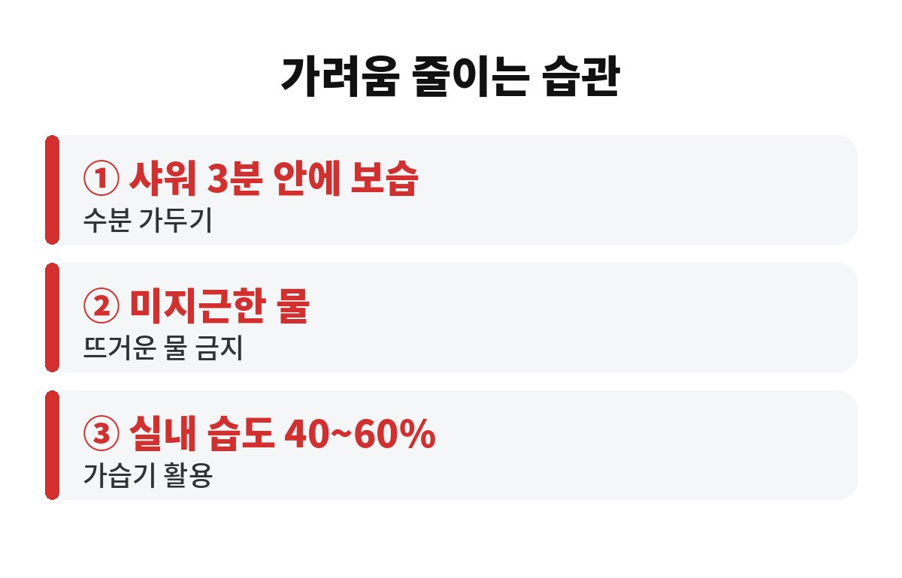
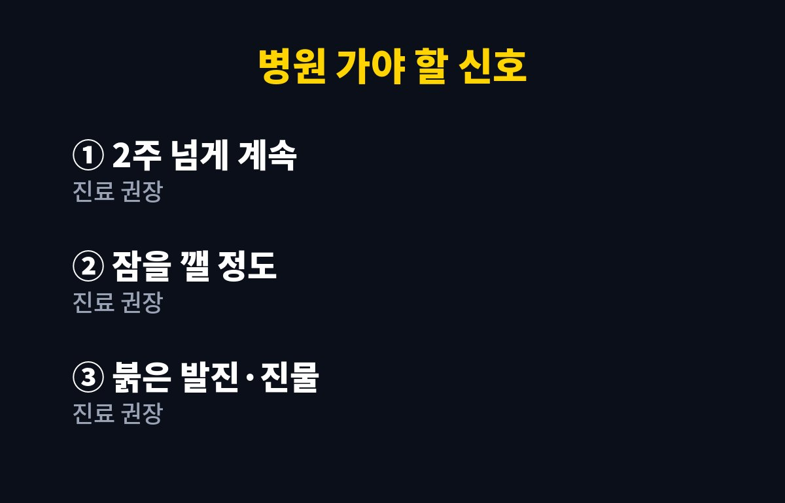

피부 가려움 원인 중 가을철 1순위는 피부가 말라서 생기는 건조증이고, 샤워 후 3분 안에 보습을 해주면 크게 달라지는 경우가 많아요. 40대 이상이라 요즘 밤마다 몸을 긁고 있다면, 혹시 내 비누나 샤워 습관이 문제일지 궁금하시죠?
가을이 되면 공기가 확 건조해지죠. 피부 겉에는 수분을 붙잡아 주는 얇은 보호막이 있는데, 습도가 떨어지면 이 보호막에서 수분이 빠르게 날아가 버려요. 보호막이 헐거워지면 아주 작은 자극에도 신경이 예민하게 반응하고, 그게 바로 가려움으로 느껴집니다.
특히 나이가 들수록 피부가 스스로 기름기와 수분을 만드는 힘이 약해져요. 그래서 40대 이상은 같은 날씨에도 훨씬 더 쉽게 가렵습니다. 정강이, 팔 안쪽, 옆구리처럼 피지선이 적은 부위가 먼저 간지러운 것도 이 때문이에요. 피부 가려움 원인을 "내가 예민해서"라고 넘기지 마세요. 대부분은 건조한 환경과 나이 탓이니까요.

네, 중요합니다. 샤워 직후 피부는 물을 머금어 촉촉해 보이지만, 물기가 마르면서 원래 있던 수분까지 같이 가져가 버려요. 그래서 수건으로 톡톡 두드려 닦은 뒤 3분 안에 로션이나 크림을 바르는 게 좋다고 흔히 안내합니다. 물기가 조금 남았을 때 발라야 수분을 가두는 효과가 커지거든요.
많이들 하는 실수가 두 가지 있어요. 하나는 "샤워 끝나고 옷부터 입고 나중에 바르자"예요. 그 사이 피부는 이미 말라 있습니다. 다른 하나는 로션을 아주 얇게 한 번만 쓱 바르는 거예요. 가려운 부위는 넉넉히, 손바닥으로 눌러가며 바르는 편이 낫습니다.
물 온도도 변수예요. 뜨거운 물은 시원하긴 한데 피부 기름막을 걷어내서 샤워 직후엔 개운해도 밤에 더 가렵게 만들 수 있어요. 미지근한 물로 짧게 끝내는 게 정답에 가깝습니다.
사실일 수 있어요. 세정력이 강한 비누나 바디워시를 매일 온몸에 박박 쓰면 필요한 유분까지 씻겨 나갑니다. 때수건으로 미는 습관도 보호막을 직접 벗겨내는 셈이라 가을에는 특히 조심해야 해요.
가렵다고 손톱으로 긁는 것도 악순환의 시작이에요. 긁으면 피부가 더 손상되고, 손상된 피부는 더 가려워지고, 또 긁게 되죠. 가려움이 올라오면 긁는 대신 차가운 수건을 살짝 대거나 보습제를 덧바르는 쪽이 도움이 됩니다.
| 피부 가려움 체크 요점 | 이렇게 해보세요 |
| 샤워 후 | 물기 닦고 3분 안에 보습 |
| 물 온도 | 미지근하게, 짧게 |
| 실내 습도 | 대략 40~60% 유지 |

보습을 열심히 했는데도 2주 넘게 계속 가렵거나, 밤에 잠을 깰 정도이거나, 붉은 발진이나 진물이 생긴다면 단순 건조증이 아닐 수 있어요. 아토피나 습진, 당뇨나 간·신장 문제, 약 부작용 같은 다른 원인이 숨어 있는 경우도 있습니다. 이럴 땐 참지 말고 피부과나 내과에서 상담받는 게 좋아요.
정리하면 피부 가려움 원인의 대부분은 가을 건조와 샤워 습관이고, 오늘 밤부터 미지근한 물과 3분 보습만 지켜도 한결 편해질 수 있어요. 여러분은 샤워하고 나서 보습까지 얼마나 걸리시나요? 댓글로 알려주시고, 도움이 됐다면 구독도 눌러주세요.
※ 일반적인 건강 정보이며 진단·치료를 대신하지 않습니다. 증상이 계속되면 전문의 상담을 권장합니다.